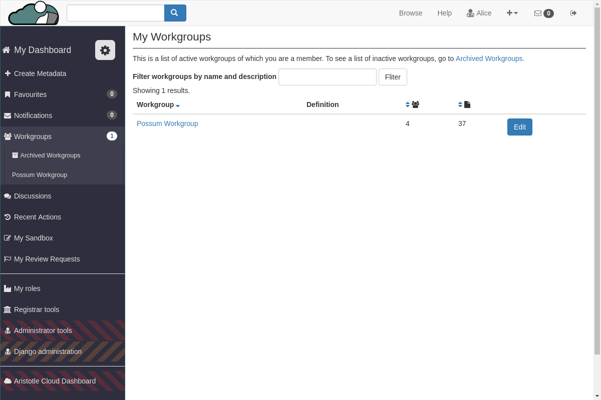
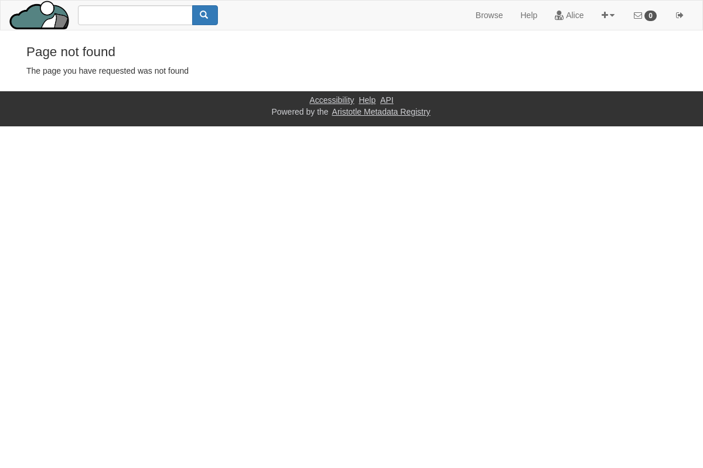

How to add a new discussion post from a Workgroup page¶
Go to your Workgroups
On your Dashboard side panel select “Workgroups”.

Select the Workgroup you want to post in
This is a list of all the Workgroups you are a member of. You are able to view content for this Workgroup and post a discussion in it. Click the Workgroups name to view the Workgroups page.
Click “view all posts”
Here you will see all conversations for this Workgroup.
Select “New Discussion”
To create a new discussion post, click the “New Discussion” button. There is one at the top of the page, and one at the bottom.

Create your discussion post
Type in a title for your post and a message. You can even link to different items within the registry. The Workgroup is already pre-selected for your convenience.

Click “New Post” to create
Once your happy with your post, select “New Post” to save and create it.

After saving, you will be taken to the newly created posts page. From here you can comment, edit, delete, or close your post.